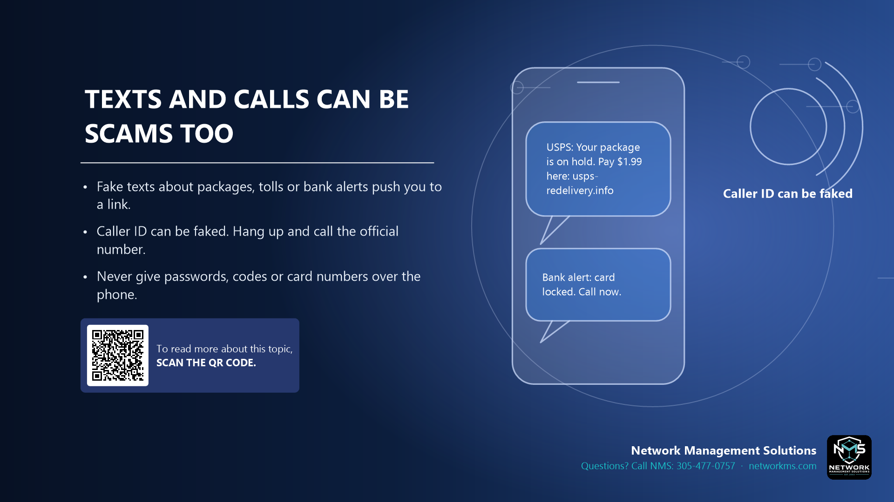

Texts and calls can be scams too

- Fake texts about packages, tolls or bank alerts push you to a link.
- Caller ID can be faked. Hang up and call the official number.
- Never give passwords, codes or card numbers over the phone.
Smishing (SMS phishing) and vishing (voice phishing) use the same tricks as email: urgency and a link or a number to call.
Common examples: a package on hold, an unpaid toll, a locked bank card, a refund, or "Microsoft support" saying your computer is infected.
Do not use the link or number in the message. Hang up and call the company using the number on its official website or on the back of your card.
Not sure about an email, text or call? Call NMS before you click: 305-477-0757 · networkms.com